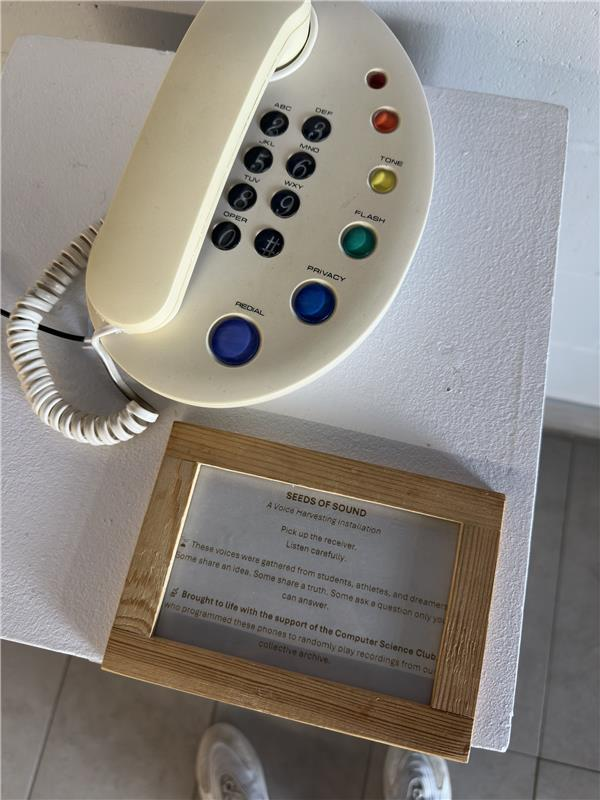
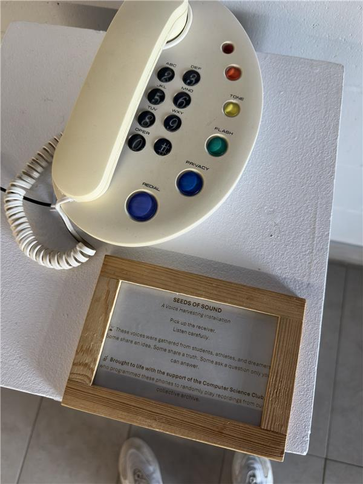
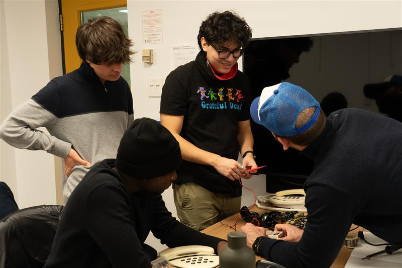
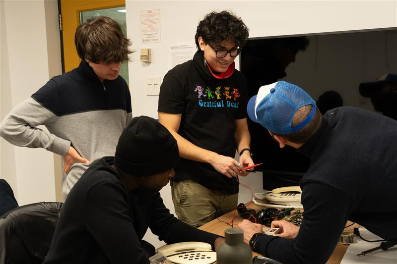
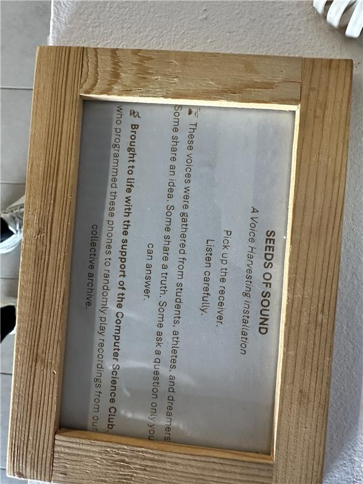
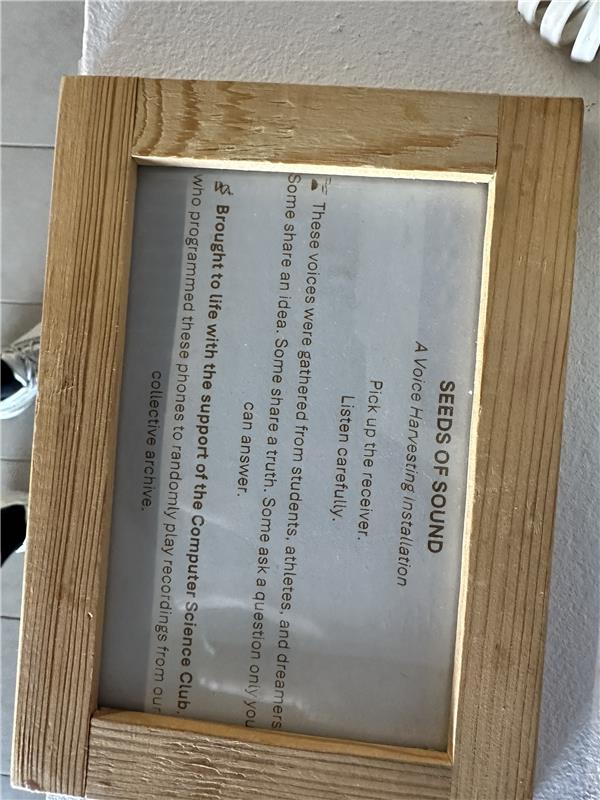

Repurposed telephones. Custom circuits. Voices that move people.
An interactive art–science installation that plays curated audio when you lift the handset. Built by the Bishop’s University Computer Science Club in collaboration with the Arts community.

About the installation
Seeds of Sound transforms obsolete telephones into interactive story devices. When a visitor lifts the handset, embedded electronics trigger curated recordings — personal voices, science narratives, and podcast excerpts — to explore how technology and art can deepen public engagement.
How it works
Repurposed hardware
Legacy rotary and feature phones are refurbished and structurally adapted for safe, public interaction.
Custom electronics
Embedded boards detect handset lift and play preloaded audio with reliable power and amplification.
Curated audio
Each phone delivers a distinct voice track — from podcasts to personal stories — inviting reflection and dialogue.
Showcase
United Nations World Food Forum · Rome, October 2025. Presented on behalf of Bishop’s University. The installation forms part of a broader conversation on sustainability, innovation, and public engagement through art and technology.
Credits
Press kit
Download high‑res photos, a 75‑word blurb, and a one‑page PDF overview.
Gallery
 


 

 

Contact
Email: mrafiee22@ubishops.ca | LinkedIn: masoud-rafiee | GitHub: Masoud-rafiee
For media or collaboration inquiries, include “Seeds of Sound” in the subject line.